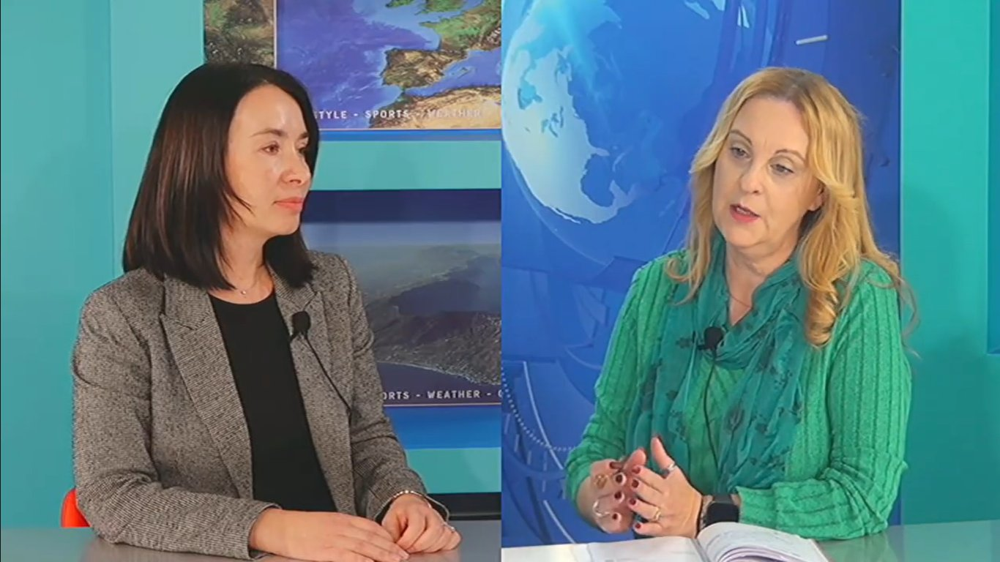

Татьяна Замфир
Кардиолог клиники Metropolitan Hospital
- Специализация по современным методикам УЗИ сердца (больница Hippokrateio) и по кардиоонкологии.
📍 Приём в Нео-Фалиро, Глифаде и на Санторини, в том числе на русском языке.
О враче
Татьяна Замфир работает кардиологом в клинике Metropolitan Hospital, а также ведёт приём в диагностическом центре HealthSpot в Глифаде. С 2023 года раз в месяц она принимает пациентов и в HealthSpot на Санторини.
Специализацию по кардиологии она прошла в больнице Asklepieio Voulas. Пять лет работала в онкологической больнице Metaxa в Пирее, прошла специализацию по современным методикам УЗИ сердца в больнице Hippokrateio, а затем была врачом-кардиологом и руководителем кардиоонкологического кабинета больницы Asklepieio Voulas.
Говорит на греческом, румынском, русском и английском языках.
Специализация
- УЗИ сердца (эхокардиография, Triplex)и современные методики эхокардиографии
- Чреспищеводная эхокардиография
- Стресс-эхокардиография (Stress Echo)
- КардиоонкологияНаблюдение пациентов до, во время и после противоопухолевого лечения
- Артериальная гипертензия и профилактическая кардиология
- Нагрузочный тест
- Электрокардиограмма (ЭКГ)
- Holter-мониторирование ЭКГ и артериального давления
Где ведёт приём
-
Metropolitan Hospital
Ethnarchou Makariou 9 & El. Venizelou 1, Нео-Фалиро
Открыть на картес 2021 года
-
HealthSpot Глифада
Gr. Lampraki 62, Глифада
Открыть на картес 2021 года
-
HealthSpot Санторини
Раз в месяц
Открыть на картес 2023 года
Для записи на приём звоните по телефону +30 697 935 3979, ежедневно с 09:00 до 21:00, включая выходные и праздничные дни.
Образование и опыт
- ОбразованиеДиплом врача, Университет города Яссы, РумынияСтипендиат
- 2007–2009Ординатура по терапии, больница Asklepieio Voulas
- 2009–2013Ординатура по кардиологии, больница Asklepieio VoulasСо стажировками в больнице Alexandra (лаборатория гемодинамики), детской больнице Agia Sofia (детская кардиология) и больнице Metaxa (ядерная кардиология)
- 2013–2018Кардиолог, онкологическая больница Metaxa, Пирей
- 2019Специализация по современным методикам УЗИ сердца, чреспищеводной эхокардиографии и стресс-эхокардиографии, больница Hippokrateio, АфиныКурс стресс-эхокардиографии (Stress Echo Course)
- 2019–2021Врач-кардиолог и руководитель кардиоонкологического кабинета, больница Asklepieio Voulas
- 2021 – н. в.Старший врач (Επιμελήτρια Α΄), Metropolitan Hospital, и HealthSpot Глифада
- 2023 – н. в.Врач-кардиолог, HealthSpot Санторини
Научная деятельность
- Участие в международных клинических исследованиях: Rythmos, Volt, Rhythm-AF и исследование ирбесартана при артериальной гипертензии.
- Доклады на конгрессах и выступления о кардиоонкологии.
Интервью

Volcano TV, 17 февраля 2026 года Что такое кардиоонкология и почему пациенту с онкологическим заболеванием важно наблюдаться у кардиолога до, во время и после лечения. Интервью на греческом языке, видео откроется на YouTube.
Контакты
- Телефон
- +30 697 935 3979
- Время звонков
- Ежедневно с 09:00 до 21:00, включая выходные и праздничные дни
- zamfirtatiana1980@gmail.com